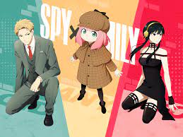

sᴘʏ x ғᴀᴍɪʟʏ
Spy × Family é uma série de mangá shōnen japonesa escrita e ilustrada por Tatsuya Endo. A história segue a vida de Twilight, um espião que precisa "formar uma família" de forma repentina para executar uma missão.
A personagem Anya, filha adotiva de Twilight, se destaca muito por sua aparência e personalidade fofa.
Para completar a Família, Yor Forger faz o papel de esposa de Twilight e mãe de Anya.

Mas o que ninguém esperava, é que cada integrante da família Forger guarda um segredo obscuro que os fez serem obrigados a manter as aparências com uma falsa família.